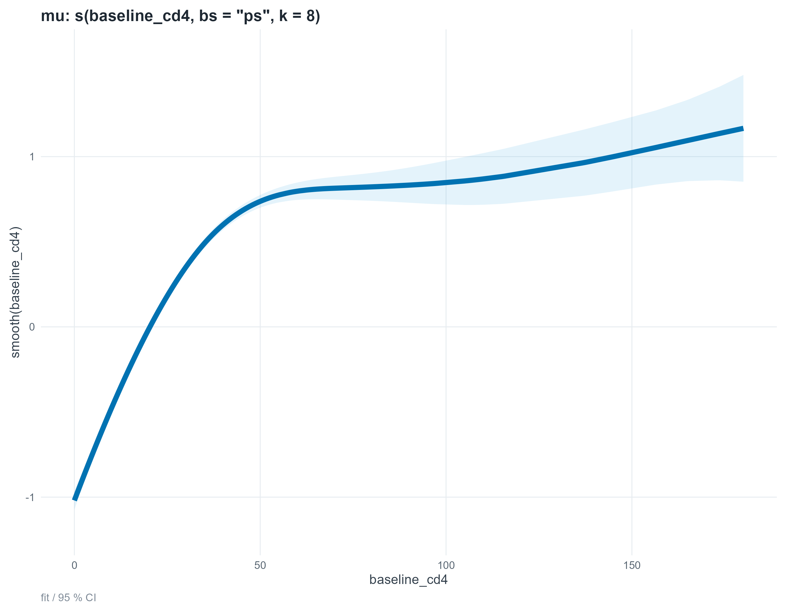
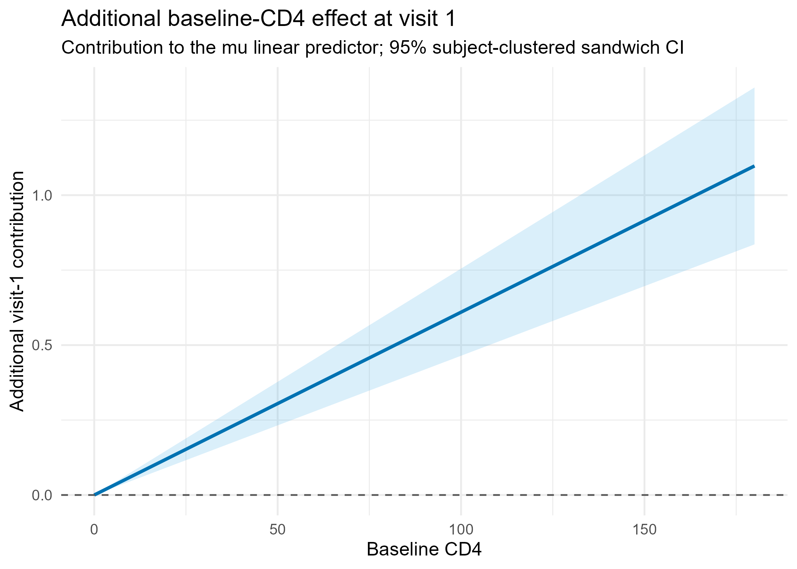
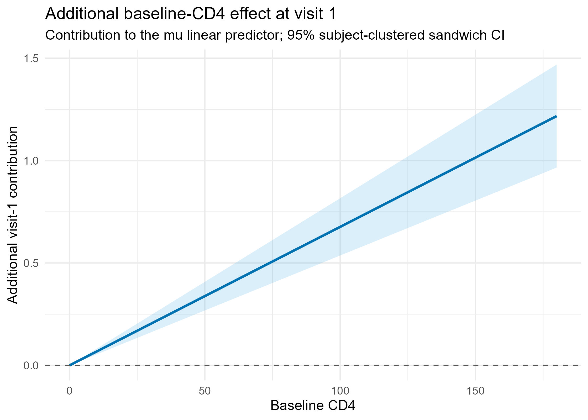

Three ZISICHEL–Gumbel models fitted to the full ACTG data, with subject-clustered sandwich inference, publication coefficient tables, complete diagnostics, and fixed/smooth term plots.
fitted_gradient_too_large warning. The covariance matrices are returned, but inferential results should be interpreted cautiously.Adds baseline_cd4:visit1 to mu. This is the BIC/parsimony winner.
Also adds nu ~ visit1. This is the shortlist AIC/PIT compromise.
| Model | Fixed coefficients | Smooth EDF | logLik | AIC | BIC | Overall PIT SD | Visit-1 PIT SD* | Lag-1 residual correlation |
|---|---|---|---|---|---|---|---|---|
| 1. Preserved | 26 | 5.918 | −13259.365 | 26582.565 | 26777.815 | 0.2802 | 0.2667 | −0.106 |
| 2. Visit-1 baseline | 27 | 5.923 | −13253.003 | 26571.853 | 26773.256 | 0.2807 | 0.2668 | −0.110 |
| 3. Baseline + shape | 28 | 5.893 | −13249.694 | 26567.175 | 26774.509 | 0.2789 | 0.2746 | −0.145 |
*Twenty-seed average; uniform target SD = 0.2887.
All targeted candidatesSingle-addition stageGreedy second stage
nu ~ visit1. It remains the AIC and BIC winner after testing visit-1 additions to sigma and tau, baseline-dependent visit-1 dispersion/shape, and a quadratic visit-1 baseline-CD4 mean effect.| Candidate | ΔAIC | ΔBIC | Visit-1 PIT SD | Visit-1 CvM | Visit-1 worm RMS |
|---|---|---|---|---|---|
Retained: nu ~ visit1 | 0.000 | 0.000 | 0.2746 | 0.4928 | 0.0848 |
Add visit1 to tau | +1.184 | +7.300 | 0.2754 | 0.4912 | 0.0825 |
Add visit-1 baseline interaction to tau | +3.107 | +15.340 | 0.2754 | 0.4936 | 0.0827 |
Add visit-1 baseline interaction to sigma | +3.439 | +15.546 | 0.2769 | 0.3967 | 0.0791 |
Add quadratic visit-1 baseline effect to mu | +3.461 | +9.500 | 0.2751 | 0.4923 | 0.0846 |
Add visit1 to sigma | +7.206 | +13.337 | 0.2760 | 0.4499 | 0.0848 |
Twenty-seed PIT averages; uniform target SD = 0.2887. Lower CvM and worm RMS are better. The modest diagnostic gains from the added terms do not compensate for their AIC/BIC penalties.
Open decision summaryPolishing resultsAll-visit diagnostics
| Margin | AIC | BIC | ΔAIC | ΔBIC | Visit-1 PIT SD | Visit-1 CvM | Visit-1 worm RMS |
|---|---|---|---|---|---|---|---|
| ZIBNB | 26561.21 | 26767.90 | −5.96 | −6.61 | 0.2591 | 2.1684 | 0.1649 |
| ZISICHEL | 26567.17 | 26774.51 | 0.00 | 0.00 | 0.2745 | 0.4945 | 0.0851 |
| ZIPIG | 26632.11 | 26827.79 | +64.94 | +53.28 | 0.2576 | 1.7110 | 0.1557 |
All models use the final covariate structure and Gumbel dependence. Uniform PIT target SD = 0.2887; lower CvM and worm RMS are better.
Open visual margin reviewDecision summaryComparison CSV
| Model | Parameter and term | Estimate | Robust SE | 95% CI | p-value |
|---|---|---|---|---|---|
| 2 | mu: baseline_cd4 × visit1 | 0.00610 | 0.000742 | [0.00464, 0.00755] | <2.0×10−16 |
| 3 | mu: baseline_cd4 × visit1 | 0.00676 | 0.000713 | [0.00537, 0.00816] | 2.4×10−21 |
| 3 | nu: visit1 | −0.600 | 0.116 | [−0.828, −0.373] | 2.4×10−7 |


